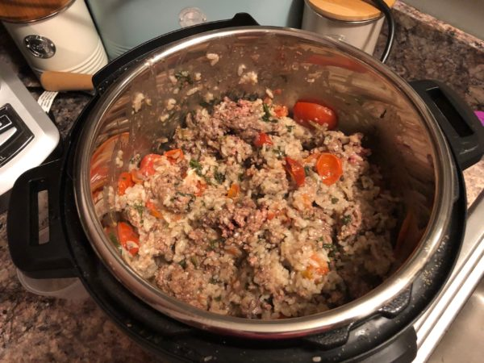

Monster Mash

Description
A quick, easy recipe that provides a large quantity of decent tasting food with balanced macros.
Ingredients
- 2 lbs 90% lean ground beef
- 2 cups white rice
- 1 lb cubed potatoes (sweet or white)
- 1 tbsp ghee
- Chicken or beef bone broth
- Half bag of spinach
- Optional: tomatoes, bell peppers, carrots, mushrooms
Steps
- In Instant Pot, add rice, water, bone broth, potatoes, ghee, veggies, and beef (formed into meatballs)
- Pressure cook for 12 minutes on high, plus 4 minutes of cool-down
- Mix up ingredients into mash and put into meal prep containers
Voila!